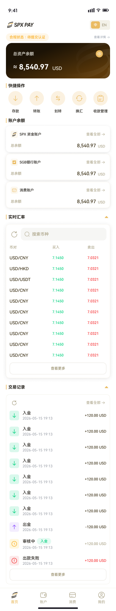
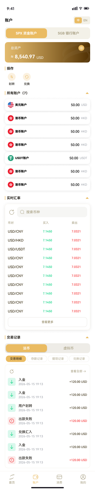
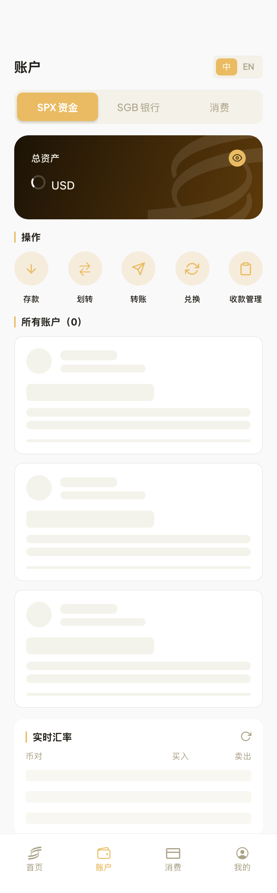

关键认知校正（本轮最重要）：之前两轮我把真值搞错了两次——先信
design-system.md 把 withdraw 改成「出金」，又信组件库 variant 把 section 标题改成「快捷功能」。
拿到 token 后抽真正的装配成屏 frame（619:8194 📱04 Home·首页 完整、704:5893 📱Account.SPX 资金账户，开发在 HeroCard.tsx/accounts.tsx 里引用的就是它们）才发现：真值是 快捷操作（非快捷功能）、转账（非出金）、账户余额。
→ 这两个误改均已撤销，实现本来就对。教训：figma-fidelity 只认装配成屏 frame，不认 design-system.md 文案、不认组件库 variant 名。
本轮净改动（撤销 2 个误改 + 保留 2 个正确项）
| 项 | 状态 | 真值依据 (frame 619:8194 抽取) |
|---|---|---|
actions.withdraw = 转账 | ✓ 撤销「出金」回真值 | frame y=6523「转账」12/500（icon ↑） |
home.quickOps = 快捷操作 | ✓ 撤销「快捷功能」回真值 | frame y=6433「快捷操作」14/700 |
| tab label active 500 / inactive 400 | ✓ 保留（本轮新增，正确） | Bottom Nav 551:4506 active 500 / inactive 400 |
| account 区标题 = 账户余额 | ✓ 实现原本就对（未动） | frame y=6549「账户余额」14/700 |
① 首页 Home — 装配 frame 619:8194 vs 实现

619:8194（金色装配成屏）
| 元素 | 真值 (frame 抽取) | 实现 | |
|---|---|---|---|
| 总资产标题/金额/币种 | 总资产余额 14/500 · ≈金额 24/700 · USD 16/500 | 同 | ✓ |
| 快捷操作 标题 | 快捷操作 14/700 | 快捷操作 | ✓ |
| 5 快捷操作 | 存款/转账/划转/换汇/收款管理 12/500（↓↑⇄⟳▤） | 5 个文案+icon 全同 | ✓ |
| 账户余额 标题 | 账户余额 14/700 | 账户余额 | ✓ |
| 账户行 ×3 | SPX 资金账户/SGB银行账户/消费账户 · 总余额 12/500 · 查看全部 12/400 · 金额 16/500 · USD 12/500 | 同（SGB 实现多一空格） | ✓ |
| 实时汇率 | 实时汇率 14/700 · 搜索币种 14/500 · 币对/买入/卖出 12/500 | 同表头 | ✓ |
| 底部导航 | 首页/账户/消费/我的 · active 金 500 / inactive 400 | 同（本轮修字重） | ✓ |
② 账户 Accounts — 装配 frame 704:5893 vs 实现

704:5893 SPX 资金账户
| 元素 | 真值 | 实现 | |
|---|---|---|---|
| 页头 + 语言开关 | 账户 · 中 500/EN 600 | 同 | ✓ |
| 分段 Segmented | SPX 资金账户 / SGB 银行账户（金色 active） | SPX 资金 / SGB 银行 / 消费（金色） | ✓ 结构一致 |
| 总资产 hero | 金色渐变 + eye | 同 | ✓ |
| 操作 quick-actions | SPX 账户真值只展示该账户支持的功能（划转/兑换…按 account_features） | 固定 5 个（存款/划转/转账/兑换/收款管理） | ⚠ 实现非账户功能感知，真值是按 feature 动态 |
| 所有账户列表卡 | flag 图标 + 账户名 + 余额 + 币种 + 状态徽章 | AccountCard（结构一致） | ✓ 结构 |
| 实时汇率 / 交易记录 | 完整汇率表 + 交易记录(法币/虚拟币 + 子tab) | 同结构（本地无数据未填充） | ✓ 结构 |
③ 真·数值 gate 跑了，但被渲染环境噪声压住（诚实结论）
用真 frame 619:8194 跑了 diff.mjs：fidelityScore 47 / GATE FAIL（135 blocking）。但逐条看，blocking 几乎全是渲染环境噪声，不是设计缺陷：
| blocking 来源 | 占比 | 是不是真缺陷 |
|---|---|---|
| 数据 MISSING：真值 frame 是填充态（8,540.97、8 行汇率、整列交易），本地渲染是空态（0.00/骨架/loading）——跨站 cookie 取不到余额 | 大头(73 critical 多为此) | 否 — 数据/状态差，非设计 |
| font-family：49/51 文本节点 computed 落到系统字体栈，非品牌 Plus Jakarta（只有 2 个显式 -Medium/-SemiBold 命中） | ~30 major | 待定 — 可能是无头渲染未加载 web 字体的假阳，也可能是真有组件没套品牌字体；需清渲染核实 |
| 相对位置 box.x/y：header 区因状态栏 inset 锚点偏移；快捷操作 x 间距 figma 20/91.5/163… vs 实现 30/106/181… | ~20 major | 部分真(快捷操作起始 x/间距)、部分锚点噪声 |
| SGB银行账户 文案（真值无空格 vs 实现「SGB 银行账户」有空格）→ 文本不匹配判 MISSING | 少量 | 否 — 空格更易读，cosmetic |
为什么还没真 gate pass：figma-fidelity 的 gate 需要把填充了数据的实现渲染去比对填充了数据的设计 frame。本地 Expo web 是跨站到 staging-api，HttpOnly cookie 不持久 → 余额/汇率/交易全是空态 → 跟设计 frame 的填充态对不上，分数被「数据 MISSING」拉垮，而非真有设计错。
要拿到真分数，必须换带数据的同源渲染：① 部署到
staging-m.spxpay.com（同源 cookie 生效、余额能加载）再跑 diff；或 ② 在 harness 里 mock API 填充数据。届时 font-family / 快捷操作间距这些才能判定真假并修到 PASS。
仍需产品/真机定（非实现做错）
- 账户「操作」是否应账户功能感知：真值 frame 按 account_features 只显示该账户支持的操作（SPX 显示划转/兑换…）；实现是固定 5 个。需产品确认要不要改成动态。
- 「收款管理」路由：首页/账户里它都去
/transfer，与「划转」撞车。label 与真值一致，路由待产品定 Manage 入口意图。 - tab bar 高 84 vs 真值 65：web 无安全区，真机才准。